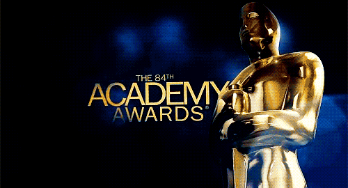

Oscar Spotify Playlist: The Nominees Pick the Song That Describes How It Feels to Be Nominated By Derek Wong Posted Yesterday at 5:51 pm 2015 OScar Nominee Picks The 2015 Oscar Nominees were asked "what song best sums up what it feels like to be nominated?". You'd be surprised by the responses they wrote down. Their choices ranged across all genres and artists. Check out the playlist of all of the songs that captured their feeling of being nominated. Read More /▶

Welcome to the academy awards.
Best Picture nominees

American Sniper Clint Eastwood, Robert Lorenz, Andrew Lazar, Bradley Cooper and Peter Morgan
Birdman or (The Unexpected Virtue of Ignorance) Alejandro G. Iñárritu, John Lesher and James W. Skotchdopole
Boyhood
Richard Linklater and Cathleen Sutherland
The Grand Budapest Hotel
Wes Anderson, Scott Rudin, Steven Rales and Jeremy Dawson
The Imitation Game
Nora Grossman, Ido Ostrowsky and Teddy Schwarzman
Selma
Christian Colson, Oprah Winfrey, Dede Gardner and Jeremy KleinerThe Theory of Everything
Tim Bevan, Eric Fellner, Lisa Bruce and Anthony McCarten
Whiplash
Jason Blum, Helen Estabrook and David Lancaster
Best Actor nominees

Bradley Cooper American Sniper
Benedict Cumberbatch Imitation game
Michael Keaton
Birdman
Steve Carell Foxcatcher
Eddie Redmayne Theory of Everything
Bradley Cooper American Sniper
Benedict Cumberbatch Imitation game
Michael Keaton
Birdman
Steve Carell Foxcatcher
Eddie Redmayne Theory of Everything
Best Actress nominees

Marion Cotillard, Two Days One Night
Felicity Jones The theory of everything
Julianne Moore — Still Alice
Rosamund Pike Gone Girl
Reese Witherspoon......Wild
Best Director
Birdman or (The Unexpected Virtue of Ignorance) Alejandro G. Iñárritu
Boyhood
Richard Linklater
Foxcatcher
Bennett Miller
The Grand Budapest Hotel
Wes Anderson
The Imitation Game
Morten Tyldum